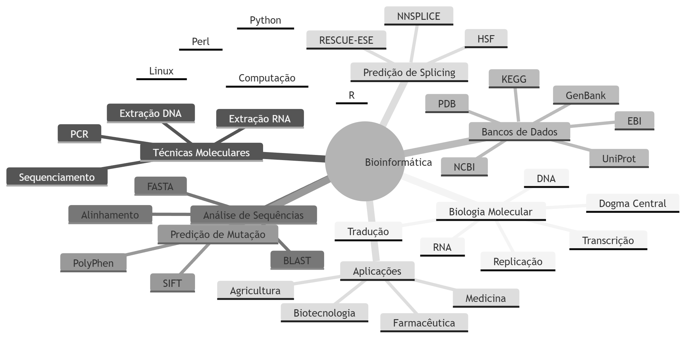

🧬 Mapa Mental Completo de Bioinformática
1. Fundamentos da Biologia Molecular
DNA
- nucleotídeos
- bases nitrogenadas
- dupla hélice
- complementaridade
- antiparalelismo
- armazenamento da informação genética
RNA
RNAm – transporta informação genética
RNAr – componente estrutural dos ribossomos
RNAt – transporta aminoácidos
Outros RNAs:
- miRNA
- snRNA
- siRNA
Dogma Central
DNA → RNA → Proteína
2. Processos Moleculares
Replicação
- semiconservativa
- bidirecional
- DNA polimerase
- helicase
- fragmentos de Okazaki
- telomerase
Transcrição
- RNA polimerase
- promotor
- TATA box
- síntese de RNA
Processamento de RNA
- cap 5'
- cauda poli-A
- splicing
- spliceossomo
- splicing alternativo
Tradução
- ribossomos
- códons
- anticódons
- aminoácidos
- ligação peptídica
3. Técnicas de Biologia Molecular
Extração de DNA
- salting out
- fenol-clorofórmio
Extração de RNA
- Trizol
PCR
- amplificação de DNA
- primers
- Taq polimerase
- ciclos térmicos
- PCR convencional
- PCR em tempo real
- RT-PCR
4. Genômica e Sequenciamento
Métodos
- Sanger
- Next Generation Sequencing (NGS)
Aplicações
- sequenciamento de genoma
- identificação de mutações
- medicina personalizada
5. Bancos de Dados Biológicos
Bancos primários
- GenBank
- EMBL
- DDBJ
- PDB
Bancos secundários
- Swiss-Prot
- PIR
- InterPro
Bancos funcionais
- KEGG
- OMIM
- Ensembl
6. Centros de Bioinformática
NCBI
- Entrez
- BLAST
- PubMed
- GenBank
- OMIM
EBI
- EMBL
- UniProt
- Ensembl
- PDB
7. Análise de Sequências
- alinhamento global
- alinhamento local
- BLAST
- FASTA
- Clustal
8. BLAST
- BLASTn
- BLASTp
- BLASTx
- Score
- E-value
9. Predição de Splicing
- NNSPLICE
- RESCUE-ESE
- Human Splicing Finder
10. Predição de Mutação
PolyPhen
- benign
- possibly damaging
- probably damaging
SIFT
- tolerated
- deleterious
11. Sistemas Computacionais
- Linux
- Unix
- Windows
- MacOS
- Python
- Perl
- R
- C
- Java
- BioPython
- BioPerl
- Bioconductor
12. Aplicações da Bioinformática
- diagnóstico genético
- medicina personalizada
- farmacogenômica
- descoberta de fármacos
- modelagem molecular
- docking molecular
- plantas transgênicas
- melhoramento genético
- engenharia genética
- vacinas recombinantes
- terapia gênica
13. Áreas da Bioinformática
- Genômica
- Transcriptômica
- Proteômica
- Metabolômica
🧠 Mapa Mental Completo
